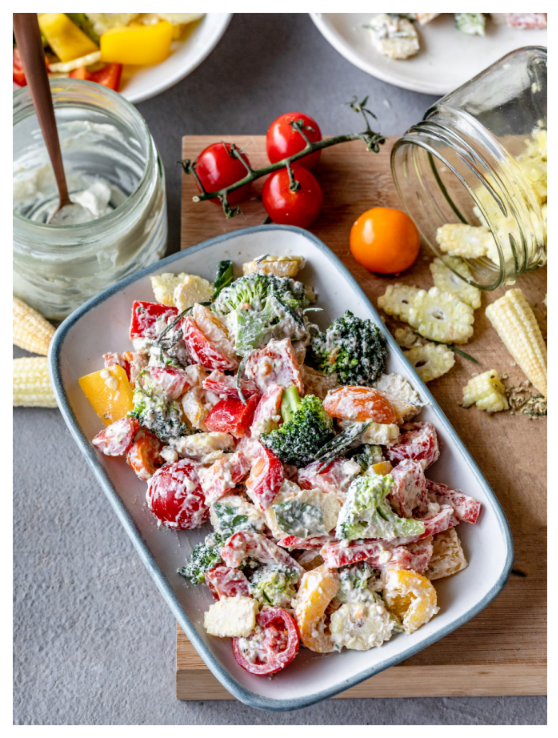

Note: We don’t need to use real cheese to get a cheesy flavour in your salad. Simply blend soaked cashews with some flavouring and it tastes even better than Parmesan!
Ingredients
- 1⁄2 cup cashews. soaked
- 1⁄4 cup coconut milk
- 1⁄2 small green chili
- 1 cup broccoli florets
- 1 cup thinly sliced baby corn
- 1 cup chopped red bell pepper
- 1 cup chopped yellow bell pepper
- 1 teaspoon rock salt
- 1 tablespoon dried oregano leaves
Pre-preparation
- Soak cashews in water for 6 hours.
- Prepare coconut milk.
Method
- Place the cashews, coconut milk and green chili into a blender and blend until smooth.
- Steam the broccoli and baby corn together for about 5 minutes.
- Pour the blended mixture into a mixing bowl. Add red bell pepper, yellow bell pepper, steamed broccoli, steamed baby corn, saltand oregano to the mixing bowl.
- Mix well and serve.
Return to top
Return to main page